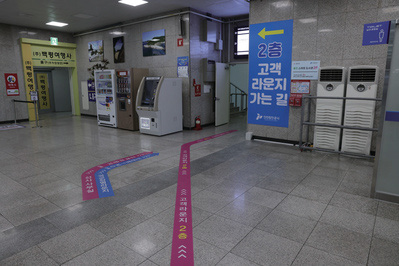
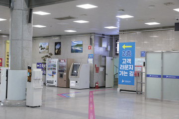
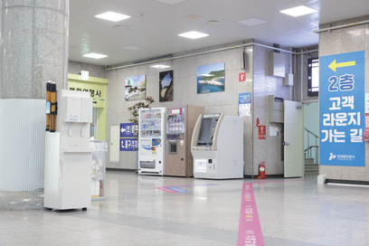
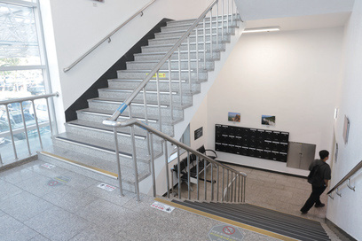
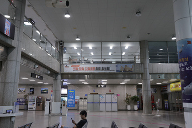

1층 대합실에는 대기와 짐이 한꺼번에 몰렸고,
이용객이 목적지를 찾아가는 길은 복잡하였다
연안여객터미널은 섬으로 가는 배를 기다리는 곳이다. 실험은 배를 타기 전 짧은 시간 동안 여객이 매표소와 승선장, 화장실, 짐 맡길 곳을 얼마나 쉽게 찾는지를 물었다.
인천 제물포구의 연안여객터미널 1층 대합실에는 매표소 두 곳과 승선장 두 곳이 한쪽 벽을 따라 늘어서 있고, 양 끝에 화장실이, 한쪽 모서리에 수화물 보관소가 있다. 대합실 가운데는 대기 의자가 줄지어 놓였고, 출입구는 맞은편 벽에 났다. 2층에는 휴게공간인 라운지가 있다.
7월 29일, 8월 11일, 10월 7일 세 차례 현장조사에서 낮과 밤, 평일과 주말의 대합실을 기록하였다. 2층 휴게공간의 이용은 낮았고, 대기와 수하물은 1층에 몰렸다. 2층으로 가는 길에는 바닥의 분홍색 선과 ‘2층 고객 라운지 가는 길’ 배너가 이미 있었지만, 실제 이동으로 잘 이어지지 않았다.
이용객은 빠르게 늘고 있었다. 2025년 연안여객터미널 이용객은 1,081,234명으로 전년보다 약 24.6% 늘었다. 배 시간이 다가오면 인파가 한꺼번에 몰리고, 서로 다른 목적의 이용객이 같은 대합실에서 각자의 목적지를 찾는다.
안내는 이미 여러 겹이었다. 천장의 시설 안내판과 배너, 바닥의 분홍 선이 서로 다른 모양으로 붙어 있었고, 처음 온 이용객은 매표와 발권, 승선과 계단의 안내를 번갈아 찾아보아야 하였다. 실험은 안내판을 하나 더 다는 대신, 목적지마다 색을 정해 바닥에서 하나의 체계로 묶는 쪽을 택하였다.
9월 14일(월)에는 대합실 운영 시간 전체를 관찰하는 사전조사를 하여 실험 전 상태를 남겼다. 문제는 ‘복잡한 동선으로 목적지와 편의시설을 찾기 어렵고, 짐을 정리할 공간이 부족하다’로 정의하였고, 목표는 길찾기부터 짐 정리까지 편리한 대기 문화로 잡았다.
 사전 현장조사
사전 현장조사1층 대합실 기록

사전 현장조사기존 안내환경 기록
(낮·밤·평일·주말)
사전조사 9.14(월) 전일 수집
- 승선 이용자 1층 대합실에서 배를 기다림
- 짐을 든 이용객 2차 실험의 주 대상
- 매표소 · 화장실 수화물 보관소 · 2층 라운지 · 국군장병라운지
- 승선장 한쪽 벽을 따라 매표소와 나란히 두 곳
- 집중 대기와 수하물이 1층에 몰림
- 안내 기존 안내만으로 이동 유도가 어려움

매표 창구 앞
무인 발권기
2층으로 가는 계단
대합실 상부와 승선장 쪽